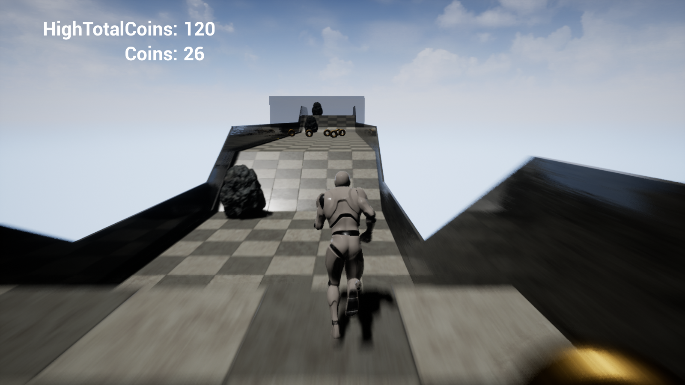
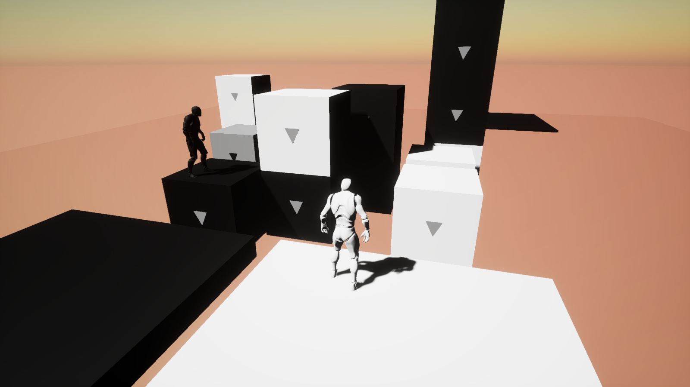

作品紹介
自作アプリを4作品紹介しています。うち2作品はこのページ内（iframe）でそのまま体験でき、
残り2作品は Google Drive のリンクからダウンロード・体験できます。
付箋メモ帳
無限キャンバス上に付箋を自由に配置・管理できるメモ帳アプリです。
ログインやサーバーが不要で、全データを端末に自動保存します。
開発は生成AIの支援で行いました。
- 無限キャンバスのパン/ズーム（ホイール・ドラッグ操作）
- 付箋のドラッグ移動・4辺リサイズ・右クリックメニューでの即時配置
- タイトル・メモ・タグ・チェックタスク・期限・色・サイズの管理
- 端末への自動保存 + JSON ファイルでのエクスポート/インポート
技術: Vue 3（Composition API）/ TypeScript / Pinia / Vite / Tailwind CSS
別ウィンドウで開く →
反転パズルゲーム
荷物を動かすソコバンと、同色で挟んだ石を反転させるリバーシを融合した
オリジナルパズルです。「同居 RIDE・押し込み PUSH・挟み反転」の3移動を使い分け、
目標ターン数内にゴールに対応色の箱を揃えます。
開発は生成AIの支援で行いました。
- BFS ソルバー（Web版）で全レベルの「解けること」を機械的に検証
- AI レベル生成パイプライン（現在保留中）向けに C++ 高速 BFS ソルバー（DLL・依存ゼロ）も実装
- レベルエディター同梱（レベルデータは JSON スキーマで統一）
- PC（キーボード）/ モバイル（十字キー・スワイプ）両対応
技術: Vanilla JS + HTML5 Canvas（フレームワーク・ビルドツール不使用）/ C++ ソルバー / JSON
別ウィンドウで開く →
俯瞰型シューティングローグライク
無限の階層で最高記録を目指す2Dリアルタイムシューティングローグライク。
画像・音声など全アセットをコードで手続き的に生成しており、外部素材ファイルはゼロです。
開発は生成AIの支援で行いました。
- Procedural ダンジョン生成（フラッドフィルによる接続性保証）
- BFS フローフィールドによる敵 AI（6種+ボス、階層で数値スケーリング）
- レイキャストによる視界（FOV）判定で、視界外は完全非表示
- SFX 10種・BGM を numpy で周波数合成 / headless 自動スモークテスト
技術: Python 3 / pygame / numpy / PyInstaller（1 exe で配布）
Google Drive で開く →
Unreal Engine 製アプリ2つ
昔 Unreal Engine で作成した 3D エンドレスランゲーム・3D パズルゲームです。


Google Drive で開く →